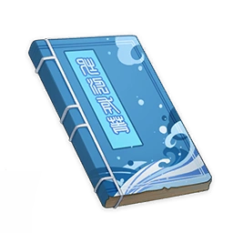

Liyue · Books & Literature
Tales From the Waves
This three-part Liyue sea legend follows an unnamed Skipper and his singing navigator from monster hunts to a wrecked ship and an unfinished vow of revenge.

A Seafarer’s Legend in Three Parts
Tales From the Waves is presented as the legendary story of an unnamed seafarer from an era when Liyue was plagued by sea monsters. Its three sections—Rising Tide, Wild Storm, and Receding Torrent—follow the same Skipper, his young navigator, and their ship. The book does not identify the Skipper, the maiden, or the monster as named figures from Liyue’s recorded history.
The recurring sea shanty binds the voyage together. It is a dramatic literary frame, not an eyewitness record or a quest log.
Wild Storm: The Maelstrom
The crew sail into a violent storm to confront a vast, unnamed beast. Their weapons wound it, but the battle destroys the ship, kills many of the crew, and breaks the Skipper’s sword. The volume ends with the monster poised to devour the damaged vessel, leaving the outcome to the final section.
Receding Torrent: Survival and an Unfinished Vow
The Skipper keeps fighting with his broken sword and lodges it in the monster’s eye. The maiden continues singing as the creature pulls her beneath the waves. The Skipper later wakes aboard an unknown merchant ship, having lost his vessel and crew, and vows to go back to sea to avenge the navigator.
The closing is not a clean victory: the text leaves the maiden’s fate and the creature’s ultimate end unresolved in this account. Neither one is named or tied to a specific god, adeptus, or historical sea monster. The collection’s tragedy and revenge promise belong to its legend.
This is an original CoreGG reading guide, not an official HoYoverse article or a reproduction of the game text. Source links below identify the records used so you can check the original context.
Sources & references
Check these sources for the original game text and reference trail.